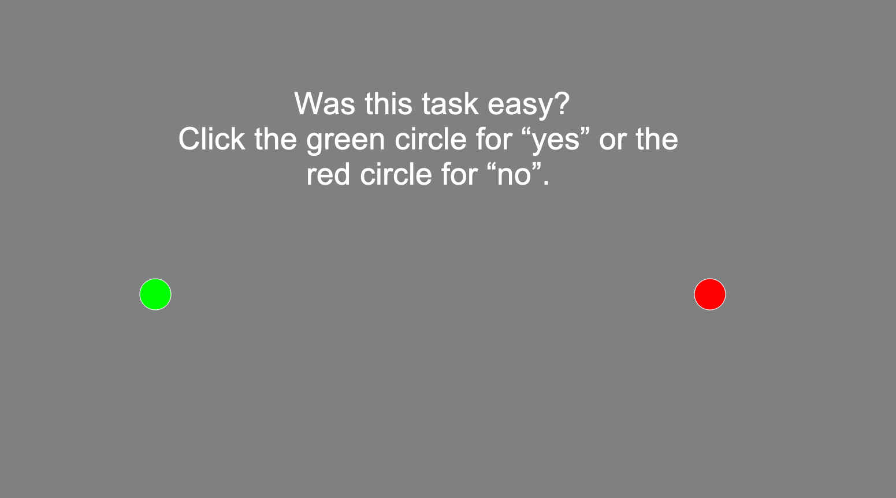

Creating a Builder experiment from scratch (tutorial)#
Alright, now let’s get to the interesting part: actually creating experiments! In this tutorial, we will guide you through creating a “Stroop task”, step by step. If you are not familiar with the Stroop task, check out the video below!
Using the Builder interface, we are going to create a simple color-word Stroop experiment, including instructions, with two conditions: congruent (trials in which the text color matches the word, e.g., red) and incongruent (trials in which the text color is different from the word, e.g., red). Along the way, we explain several PsychoPy features, which you will practice with in ToDos. A finished Stroop experiment is available under solutions/week_2/Builder/stroop.psyexp, but we highly recommend that you first try to complete the exercises without peaking at the solution!
Warning
Make sure you save your experiment (File → Save, or cmd/ctrl + s) often during this tutorial!
Create a new experiment#
Let’s start by creating a new experiment.
ToDo
Create a new experiment (File → New) and immediately save the experiment with the name stroop.psyexp in the tutorials/week_2 folder.
Also, let’s change some of the default settings.
ToDo
In the Experiment settings window (Basic tab), enter stroop next to Experiment name and remove the session option in the Experiment info box. In the Data tab, make sure the data is saved as sub-{nr}. Finally, in the Screen tab, make sure the experiment uses your own monitor (which you created in an earlier tutorial) and set the Units to “norm”.
Note that the choice of normalized units (“norm”) is somewhat arbitrary. We personally like it to easily create stimuli with the appropriate size (but YMMV).
Creating routines and adding components#
Let’s start our experiment with a nice welcome to our participants who are willing to participate in our experiment. To do so, we’ll create a new routine with a single text component. Note that new experiments contain, by default, a single routine named trial.
ToDo
We’ll use the default trial routine, but let’s rename it to welcome. In the flow pane, right-click the trial routine, select rename, and change its name to welcome. Then, in the components pane, select a text component.
After clicking on the text component icon, the previously discussed properties window pops up. This window has different tabs, but most often you only change things in the Basic tab (and sometimes in the Advanced tab). First of all, although PsychoPy provides a default component name (here: “text”), we recommend you choose a descriptive name of the new component.
ToDo
Give the component a new, descriptive name in the Name field (e.g., welcome_txt).
Then, the next property to determine is the start (onset) and stop (offset) of the component relative to the start of the current routine. For both the start and the stop times of your component, you can choose whether to define these times in seconds — time (s) in the dropdown menu — or in the number of frames — frame N in the dropdown menu. We will revisit timing in terms of the number of frames in the Coder tutorials later; for now, we will use the time (s) option (for more info about the frame N and condition options, check the PsychoPy website).
In addition to the seconds/frames option, the stop time can also be defined in terms of the component’s duration (which is, in fact, the default). When the start time is 0, then the duration (s) and time (s) give the same results, of course.
ToDo
Set the component onset to 0 and the duration to 3 seconds.
Other properties include the color and font of the text component. The Color property accepts any standard X11 color name and you can use any font available on your system. For now, let’s leave these properties at their default values (white and Arial).
The next property is the size (or Letter height) of the text. The units of the font size are whatever you specified in the Experiment settings! As we specified normalized units, the default (0.1) represents 10% of the half the the screen. Then, you can specify the position of text component with two numbers: x (the horizontal position) and y (the vertical position). Like the letter height, the units depend on whatever you specified in the Experiment settings.
ToDo
Let’s make this a little bigger. Set the letter height to 0.2. Then (for now specific reason whatsover), set the position such that the text will appear horizontally in the middle, but vertically halfway between the top and the middle. Make sure you have read the explanation of normalized units on the PsychoPy website before you try to do this!
Finally, the only thing we need to specify is, of course, the text itself! In the box associated with the Text property, you may specify any plain text, including line breaks (“enters”). Note that PsychoPy will automatically try to wrap the text if it exceeds the window (which can be customized with the Wrap width option in the Advanced tab).
ToDo
Add some text to the text component to welcome our participant. When you’re done, click OK to save all the changes to the properties.
By now, you should see the new text component in both the routines pane (with its onset/offset) and in the flow pane. Try running the experiment by clicking on the green play button (►) to check whether everything works as expected! If the Experiment runner displays ##### Experiment ended. #####, everything ran without problems.
ToDo
Each Builder component has a Help button in the lower left corner of the properties window. If you click this button, your browser will open the PsychoPy documentation of the associated component!
Keyboard interaction#
After welcoming our participants, let’s give them some general instructions about our task. As a side note, we want to stress that spending some time and effort to create clear and extensive instructions can, in our experience, matter a lot for the quality of your data! Here, we’ll keep it short, but keep this in mind for your future experiments.
ToDo
Add a new routine (Experiment → New Routine) and name it instructions.
After doing so, you should see that an empty routine appears in the routine pane. Also, note that PsychoPy does not automatically add your new routine to the flow pane (after all, it doesn’t know where you want this routine to appear). To do so, click on Insert Routine in the flow pane, select the instructions routine, and click on the flow in between the welcome routine and the right arrow head.
ToDo
Add the instructions routine to the flow right after the welcome routine.
Now, we need another text component with instructions of course, but this time we are going to implement it slightly differently than we did in the welcome routine. We want to make sure our participants have enough time to read the instructions, so setting a predefined duration (like we did in the welcome routine) is not ideal. Instead, we will let the participant indicate whenever they are done and want to continue by having them press the return (“enter”) key. But first, we need a text component with some instructions.
ToDo
Add a text component with the following text:
In this experiment, you will see words (either “green” or “red”) in different colors (also either “green” or “red”). Importantly, you need to respond to the COLOR of the word and you need to ignore the actual word. You respond with the arrow keys:
GREEN color = left RED color = right
(Press ‘enter’ to start the experiment!)
Give the component a sensible name, keep the letter height at the default (0.1), and leave the stop property empty.
The effect of leaving the stop property empty is that you, technically, create a component with an infinite duration. This is highlighted in the routine pane by the bar corresponding to the component extending beyond the time axis. As mentioned, we’d like to continue the experiment if the participant pressed the return key. To implement this, we’ll need to add a keyboard component. In addition to some standard properties (like name, start, and stop), the keyboard component also has the property Allowed keys, which specifies which keys are recorded and affect this component, and Store, which specifies which of the potentially multiple key presses should be saved. The property Store correct is not relevant, here, so we’ll ignore that for now.
Another important property, especially in our current use case, is the Force end of Routine option. When enabled (the default), it will end the current routine and move on to the next whenever one of the allowed keys is pressed, which is exactly what we want for our instruction routine!
ToDo
Add a keyboard component to the instruction routine. Make sure the stop property is left empty and that it ends the routine when the participant presses the return key (i.e., use “return” for Allowed keys).
If you did the ToDo correctly, you should see a new keyboard component in the instruction routine which similarly extends beyond the time axis of the routine pane (indicating that it does not have an offset). Now, run the experiment again and check whether the instruction routine works as expected! (Note: because the instruction routine is the experiment’s last routine, it may seem that the experiment doesn’t advance immediately after pressing enter, but that’s because it takes a second or two to quit the experiment after the last routine due to saving data and such.)
If this were a real experiment for your master thesis, for example, we’d recommend adding some more detailed instructions and practice trials. Also, you probably want to use a larger variety of color-word pairs to increase generalizability (see, e.g., Westfall, Nichols, & Yarkoni, 2017). But to keep this experiment relatively simple, our current instructions suffice and we’ll only work with two colors (green and red).
Shape (polygon) components#
Often, experiments contain a “fixation target” before and in between trials to prevent participants from making too many eyemovements which may impact the results. Often, a simple plus sign is used (which can be created using a text component). For educational purposes, however, let’s use a small circle (“fixation dot”), which can be created using the Polygon component. Let’s add an initial fixation target to our experiment, so that the first trial doesn’t immediately show up after the instructions.
ToDo
Create a new routine, named init_fix, with a single Polygon component representing a white circle of size (0.01, 0.01) lasting 2 seconds. Note: “circle” is not part of the standard polygon shapes you can choose. Read the documentation carefully to figure out how to create a circle!
After creating the init_fix routine, run the experiment to see whether it works as expected!
ToThink
If you run the experiment, the fixation dot may look more like an oval than a circle… Do you understand why? Do you know how to fix this? Hint: it has to do with the experiment’s units.
If you want a challenge, try the (optional) ToDo below.
ToDo
In their article What is the best fixation target? The effect of target shape on stability of fixational eye movements [Thaler et al., 2013], Thaler and colleagues (2013) investigate the effect of different fixation targets on eye movements and find that the fixation target below leads to the fewest eye movements.
Try creating this “optimal fixation target” instead of the circle from the previous ToDo. Note that you need multiple Polygon components in the same routine to achieve this.
Loops and conditions files#
Now, it’s time to focus on the most important element of the experiment: the actual “color-word” trials! To do so, we can create a routine with a single text component (in which we can vary the text itself and the text color). Let’s start with a congruent trial in which both the word and the color is red. Also, it would be nice if the routine terminates after 5 seconds or upon a button press (limited to either the ‘left’ or ‘right’ keys) and is followed by a fixation target routine of 0.5 seconds (a so-called “inter-stimulus interval”, or ISI).
ToDo
Add a new routine, named stim, with a text stimulus (trial_txt) with the word “red” in the color red and font size 0.2, which terminates after 5 seconds or when the participant presses the left or right arrow key (for which you need to add a keyboard component!) and is followed by a new routine, named isi, which shows a fixation dot (like in the init_fix routine we created before) for 0.5 seconds. Try running the experiment when you’re done to see whether everything works as expected!
Alright, that’s a start. But we need more than one trial, of course! One strategy would be to keep adding adding additional stim routines (e.g., stim1, stim2, … , stim100) with different color-word pairs and subsequent ISI routines (e.g., isi1, isi2, …, isi100), but that would not be very efficient, right? You probably see where I’m going: we can use a loop for this! In this loop, we can reuse the general structure of the trial (a stim routine + a isi routine) and only vary the elements that differ across trials (i.e., the words and text colors). These varying elements can be any property of any component within the loop!
The way to specify the varying elements in a loop is through a conditions file (an Excel or CSV file). In this file, the rows represent the different trials and the columns represent the different elements that vary across trials. For our Stroop experiment, we could create a file, conditions.xlsx (or conditions.csv) with two columns — stim_word and stim_color — and twenty rows: 5 rows for each color-word combination (5 for red-red, 5 for red-green, 5 for green-green, and 5 for green-red), assuming we want a 50/50 split between the congruent/incongruent conditions. The values for the stim_word and stim_color columns can then be used to modify, per iteration of the loop, the Text and Color attributes of our text component, respectively.
ToDo
Create an Excel (or CSV) file with two columns named stim_word and stim_color and 20 rows outlining the words and colors (which should be either red or green). Note that your final file should have 21 rows (the first row being the column headers). Make sure to save this file in the same directory as your stroop.psyexp file.
Now, to create the loop, you need to click Insert Loop in the flow pane. Then, when hovering your cursor above the actual flow diagram, a small circle should appear; click on the flow diagram where you’d like your loop to start and click a second time on the diagram where you’d like to your loop to end, after which a new Loop Properties window should pop up. In this window, you can specify the name of the loop, the type of the loop (i.e., how to loop across the different rows), and whether this is a loop across trials or blocks (i.e., the Is trials option, which you may ignore for now).
The nReps property indicates how often you want to loop across your different trials and the Selected rows optionally allows you to specify a subset of rows to loop over. By setting the random seed (an integer), you can make sure that the loop shuffles the trials the same way every time you run the experiment. Finally, the Conditions property should point to the Excel or CSV file with the properties that change across the different trials.
ToDo
Create a loop across the stim and isi routines (i.e., the loop should encompass these two routines). Name this loop trial_loop and make sure it loops randomly across trials a total for 3 repetitions (generating 60 trials). No need to select a subset of rows or to set a random seed. Select your previously created conditions.xlsx (or conditions.csv) for the Conditions property.
Although we have created our loop, the data in the Conditions file has not been linked to our text component (in the stim routine), yet! To do so, we need to modify the Color and Text properties in our text component in two ways. First, we need to tell PsychoPy that the value of the property changes every iteration of the loop. To do so, we need to change the constant value to set every repeat in the dropdown menu next to the property. Second, we need to tell PsychoPy the column name (from our conditions file) that contains the values for the property we want to update every iteration. Importantly, this column name needs to be prefixed by a dollar sign ($), i.e., $some_column_name.
ToDo
In the text component from your stim routine, change constant to set every repeat for both the Color and Text properties. Then, make sure the values for the Color and Text properties refer to the stim_color and stim_word columns from your conditions file, respectively. Click OK to update the text component. Run the experiment to see whether everything works as expected!
If you made it to this point in the tutorial: good job! You created a complete Stroop experiment from scratch! In the following sections, we’ll add some more (non-essential) elements to our experiment as an excuse to explain some more Builder components.
Tip
In the next section, we are going to add some routines after our trial loop. When we want to test this, it is quite annoying that we have to go through our entire trial loop before seeing the new routines. One way to “skip” the trial loop is to enable the Disable component property (in the Testing tab of the properties window) of each component in the stim and isi routines, which will skip said routines.
Another thing you can do is to set the nReps property of the loop to 0!
Mouse interaction#
After the trials, we might want to get some feedback on the task from the participant. Let’s ask our participant the question “Did you like this task?” to which the participant can answer “yes” or “no”. This time, though, we’ll make the participant answer using the mouse (instead of the keyboard) by clicking in either a green circle on the left (for “yes”) or a red circle on the right (for “no”). Note that this is a completely useless addition the current experiment, but we included it nonetheless to demonstrate the Mouse component.
ToDo
Create a new routine, named feedback, which creates a display like the image below (doesn’t have to exactly like it). Make sure each component has an infinite duration (by leaving the stop property empty). Hint: you can change the (RGB-specified) color of the Polygon components in the Advanced tab of the properties window. If you test your implementation, remember that you can use the escape key to abort the experiment.

To enable interaction through the mouse we can, guess what, add a Mouse component! Like the keyboard component, this component can force the end of the routine with the End Routine on Press property. By default, this is set to any click, meaning that the routine will end at the first button press of the participant. However, we’d like to only end the routine when the participant made a “valid” click, i.e., clicked one of the circles. To do so, you can set the End Routine on Press to valid click and explicitly specify which components, when clicked, count as “valid clicks” at the Clickable stimuli property.
ToDo
Add a Mouse component, give it a sensible name, set the duration to infinite, and make sure it forces the end of the routine only when one of the circles have been clicked by filling in the component names of your circles in the Clickable stimuli field (separated by a comma). Run the experiment to see whether everything works as expected!
Image components#
We are of course thankful for the participant’s efforts, so let’s thank them! We found a nice image to include in a final routine, thank_you.png (which is located in the tutorials/week_2 directory). To embed an image in your experiment, you can use the Image component.
ToDo
Add a new routine after the feedback routine, named goodbye, which contains a single Image component, which lasts 3 seconds. Make sure to set the Image property with the thank_you.png file. Run the experiment to see whether everything works as expected!
Code components (optional)#
Alright, for those that want to delve a little deeper into the more advanced Builder features, let’s take a look at Code components (this is an optional section). With Code components, you can “inject” custom Python code into your Builder experiment. To showcase Code components, let’s use one to implement random ISIs (instead of the fixed 0.5 seconds we use now). Using variable instead of fixed ISIs is a trick to prevent participants to anticipate the upcoming stimulus/trial.
As we want to vary the ISI, we need to change the fixation dot in the isi routine. To do so, we’ll create a new Python variable that represents a random ISI in a Code compoment, which we subsequently need to link to the Polygon component (i.e., the fixation target). To generate a random ISI (e.g., uniformly distributed between 0 and 1), we can use the [uniform] function from the built-in Python module random:
import random
t_isi = random.uniform(0, 1)
Here, t_isi is a float between 0 and 1. When creating a new Code component, the properties window actually allows you to specify different code types: Python (py), Javascript (JS), or a combination of both (both). Then, you can specify your code to run at different times during the experiment (Before Experiment, Begin Experiment, End Experiment) and routine (Begin Routine, End Routine).
ToDo
Create a new Code component, give it a sensible name, and make sure the code snippet above runs at the start of the isi routine.
The only thing we still need to do is to make sure the Polygon component uses the randomly generated ISI (i.e., t_isi) for its duration. In general, you can write Python code and access Python variables “under the hood” by prefixing the value by a dollar sign ($), like we did when accessing the columns from the conditions file earlier. So, to access the Python variable t_isi from our Code component for the Polygon end property, you can use $t_isi.
ToDo
Make sure the end property of the fixation dot Polygon component uses the t_isi variable from our Code component. Then, run the experiment to verify that the ISIs are now different from trial to trial.
Alright, if you are up for a challenge, try one or both of the next ToDos.
ToDo (optional/difficult!)
In some experiments, you may want to give your participant feedback after each trial. Add a routine after the stim routine within the trial loop that shows, for 0.5 seconds, the text “correct!” when the participant gave the right response, “incorrect!” when the participant gave the wrong response, and “too late!” when the participant didn’t respond within 5 seconds. You need to include a Code component in this new routine that determines this feedback. Hint: in your Code component, the color of the current stimulus is stored in the Python variable stim_color and the response from the participant (i.e., either ‘left’ or ‘right’) is stored in the Python variable {name_kb_comp}.keys (replace {name_kb_comp} with the actual name of your keyboard componet in the stim routine).
ToDo (optional/difficult!)
In the current experiment, we indicated that participants should respond ‘left’ to green-colored words and ‘right’ to red-colored words. However, ideally, you’d want to counterbalance this color-response contingency across participants, i.e., (approximately) half of the participants should respond red-left/green-right and the other half should respond red-right/green-left. This between-subject condition should affect the text Component of the instruction routine. Arguably the easiest way to implement this is by creating another conditions file (e.g., participants.{xlsx,csv}) that outlines the color-response condition, which modifies the instruction routine.
Bonus: try to implement this ToDo and the previous optional ToDo in the same experiment!
Finally, we’re at the end of the Builder tutorial! By now, you know most of the essential features of PsychoPy’s Builder interface. Of course, PsychoPy offers many more (advanced) functionality and funky components, but we’ll leave that up to you to explore yourself! For now, let’s continue with the first Coder tutorial!